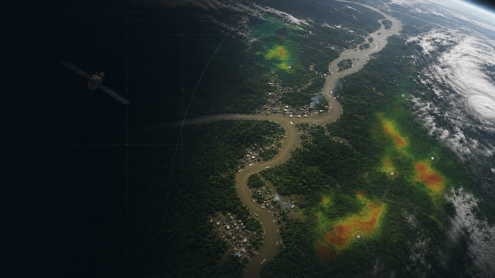
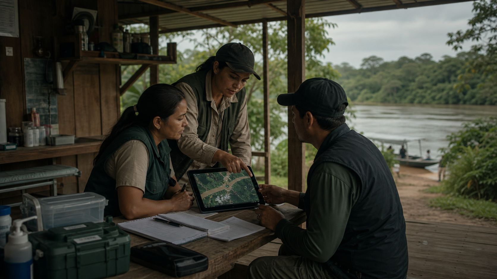

Saúde distante
Comunidades isoladas recebem ajuda só depois do aumento de casos.
GS 2026 · Indústria Espacial

Previsão epidemiológica com dados espaciais para proteger regiões sem acesso rápido à saúde.
Ver propostaPopulações ribeirinhas, indígenas e rurais vivem longe de atendimento médico.
Surtos biológicos aparecem tarde quando faltam dados e conectividade local.
Comunidades isoladas recebem ajuda só depois do aumento de casos.
O sistema reage após internações, filas e pressão nos hospitais.
Clima e saúde não conversam a tempo de prever riscos.
A proposta cruza dados espaciais com informações de saúde pública.
O site apresenta a ideia em cards, fluxo e benefícios para a GS.
Imagens indicam vegetação, água parada e mudanças ambientais.
Temperatura e umidade ajudam a estimar risco de vetores.
Casos registrados ajudam a comparar padrão ambiental e surto.
O projeto antecipa riscos antes que o surto cresça.
Ele transforma dados espaciais em apoio para decisão local.
Observar vegetação, chuva, temperatura e água acumulada.
Relacionar clima, território e ocorrências de saúde.
Indicar áreas que precisam de ação preventiva.
A solução mira comunidades remotas e equipes de saúde pública.
Também atende defesa civil, agro e gestores de áreas isoladas.

Recebem atenção antes do surto chegar aos hospitais.
Priorizam vacinação, insumos e equipes de campo.
Aigis Protection troca resposta tardia por prevenção orientada por dados.
O espaço vira primeira linha de defesa para a saúde na Terra.
O risco aparece antes da alta de internações.
Áreas isoladas entram no mapa de prevenção.
Equipes chegam onde o risco está maior.
Prevenir custa menos que responder a crises.